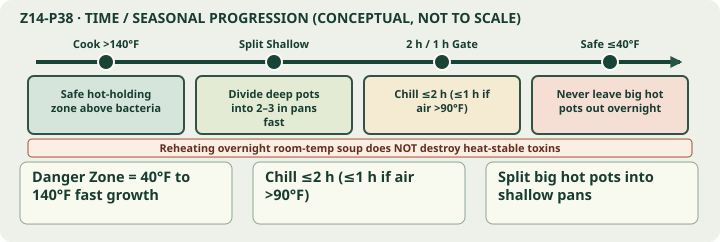

Z14-P38 · Food production and preservation · New manuscript
Enforce the 2-hour perishable chill rule during bulk harvest and cooking
Prevent rapid bacterial multiplication and heat-stable toxin formation in cooked dishes, cut melons, and prepared meats.
When it applies · Daily meals, bulk canning prep days, holiday cooking, and warm summer outdoor gatherings.
Equipment · Shallow cooling containers, working refrigerator ≤40°F, and kitchen timer.

Actions
- Refrigerate or freeze all perishable foods (cooked meats, cut tomatoes/melons/leafy greens, dairy, cooked grains/beans, leftovers) within 2 hours of cooking or cutting—and within 1 hour whenever room or outdoor air temperature exceeds 90°F.[F03]
- Divide large hot pots of soup, stew, or chili into shallow containers (2 to 3 inches deep) BEFORE refrigerating so core temperatures drop rapidly through the 40°F–140°F Danger Zone instead of staying warm for hours inside a deep stockpot.[F03]
- Remember that reheating food left out overnight does NOT make it safe—bacteria like Staphylococcus aureus and Bacillus cereus produce heat-resistant toxins that survive boiling.[F03, P10]
Failure recognition · Leaving a giant covered stockpot of chicken soup sitting on the kitchen counter overnight "to cool down before putting it in the fridge."[F03]
Verify · Confirm hot bulk batches split into shallow pans, chilled within 2 hours (1 hour >90°F), and refrigerator holds ≤40°F.[F03]
Stop or change course · Any perishable food held between 40°F and 140°F longer than 2 hours (or 1 hour >90°F) must be discarded cleanly without tasting.[F03, F04]
Evidence and editorial notes
- F03 · USDA / FDA / CDC · Four Steps to Food Safety (current web edition)
- Section: Chill > Refrigerate promptly · Conditions: Perishable food outside temperature control
Support: Refrigerate within two hours, or within one hour above 90°F.
Limitations: Ambient temperature spikes shorten safe holding windows. · Conflicting evidence: None; retained for food safety pack completeness.
Editorial note: Maintains five-pack integrity. · Specialist reviewer: Food safety and public health
Primary source · checked 2026-11-24 - F04 · USDA / FDA / CDC · Food Safety During Power Outage (current web edition)
- Section: Refrigerated food and power outages · Conditions: Refrigerator starts cold; keep door closed
Support: An unopened refrigerator keeps food cold for about four hours. Follow the per-item discard chart after loss of temperature control. Never taste to test.
Limitations: Door openings accelerate warming; appliance thermometer is needed to verify temperature. · Conflicting evidence: None; retained for Z15 reconstruction.
Editorial note: Maintains five-pack integrity. · Specialist reviewer: Food safety and household preparedness
Primary source · checked 2026-11-24 - P10 · NCHFP · Identifying and Handling Spoiled Canned Food (current web edition)
- Section: Identifying and Handling Spoiled Canned Food > Botulism Detoxification · Conditions: Suspected unsealed, bulging, spurting, foamy, moldy, or improperly processed home-canned jars
Support: Never taste suspect home-canned food—botulinum toxin is odorless and tasteless; check every seal before opening, discard unsealed jars promptly after processing (or refrigerate/reprocess within 24 hours per NCHFP rules), and follow official NCHFP detoxification/disposal steps for suspect low-acid jars.
Limitations: Simple visual clarity or normal smell never proves an untested low-acid jar is free of botulinum toxin. · Conflicting evidence: None; mandatory high-consequence food-safety stop condition.
Editorial note: Anchors spoilage inspection and safe disposal in Z14. · Specialist reviewer: Food microbiology and public health
Primary source · checked 2026-11-24
Source lineage · USDA/FDA/CDC FoodSafety.gov; new manuscript · Classification · New manuscript.